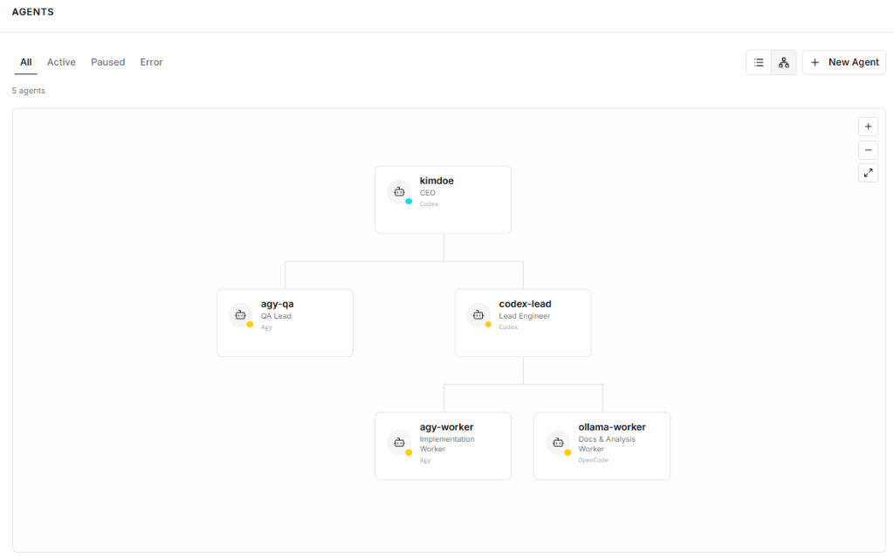

Contact dlgusdn946@gmail.com | 010-9378-1713
GitHub https://github.com/Gotti0
Education 한국방송통신대학교 컴퓨터과학과 3학년 (2028.03 졸업 예정)
Training 서울 핀테크 아카데미 (금융투자 및 핀테크 과정)
| Data Engineering | KIS API, Cybos Plus, Panama Rollover, Volume Crossover, Write-time Validation |
|---|---|
| Quantitative & ML | Deflated Sharpe Ratio (DSR), Fractional Diff (FFD), XGBoost, VectorBT, Optuna |
| System & Backend | Python 3.11, FastAPI, Asyncio, WebSockets, FSM Order Lock, 32/64bit IPC |
| Dev-Ops & Infra | Paperclip 에이전트 거버넌스, MiniPC 24/7 배치, Git WORKLOG, Docker, MCP |
• 알고리즘, 자료구조, 데이터베이스 등 CS 핵심 기초 이수
• 졸업 후 특수대학원(IT경영대학원) 진학, 일/학습 병행 목표
• Fundamental + Technical + Sentimental 데이터를 앙상블한 초거대 금융 예측 모델 연구 지향
• 한국거래소(KRX) 시장 구조, 호가/체결 원칙 및 청산 결제 체계 심층 수강
• 핀테크 규제 샌드박스 및 금융 데이터 거버넌스 학습
• 60+ 커밋 단위 WORKLOG 기반 의사결정 추적성 확보
• SSoT 및 멱등성 검증 원칙 체화
• Neo Batch Translator: Gemini API 기반 20MB 대용량 청킹 번역기 (실사용 커뮤니티 공개, 누적 3만+ 조회수, 피드백 기반 지속 개선)
• Google Vision OCR: 스캔 문서 OpenCV 전처리 및 비동기 병렬 EPUB 자동 생성 툴
KIS / CYBOS API: 국내외 선물·주식 수집
Panama Rollover: 거래량 역전일 기반 연속선물 합성
Write-time Isolation: OHLC 관계식 기반 결함 실시간 격리
Deflated Sharpe Ratio (DSR): 과적합 통계 감사
Fractional Diff (FFD): 장기 기억 보존 정상 시계열
Causal 3-State HMM: 시장 변동성 국면 필터
FastAPI & Asyncio: 비동기 저지연 이벤트 엔진
Dual Venv Bridge: 32bit COM ↔ 64bit WebSocket
FSM Order Lock: 원자적 이중 주문 방지
SQLite (WAL Mode): 고속 시계열 무결성 영속화
DB Slimming: 5,100만 행 시세 다이어트 (1.6GB 회수)
Redis TTL Cache: 반복 연산 캐시 및 한도 방어
MiniPC 24/7 Server: 무인 백그라운드 수집 배치
Resume Checkpoint: 실패 시 중단 지점 복구 파이프라인
pytest Suites: 80+ 수식 및 멱등성 불변식 검증
Paperclip Control Plane: 에이전트 계층화, 승인 루프, 예산 통제
Gemini API / Voyage AI: 공시·뉴스 임베딩 및 감성 분석
Multi-Agent MCP: Git Worktree 격리 및 외부 지식 실시간 바인딩
| 감사 관문 | 검증 기준 (Criteria) | 엔지니어링 의도 및 방어 목적 |
|---|---|---|
| Gate 1 완전성 & 유니버스 |
5개 슬롯 결측치 없음, 총 거래수 ≥ 100, 시장 참여 폭(Breadth) ≥ 50% | 특정 소수 종목이나 편향된 시장 국면에만 의존해 우연히 성과가 나오는 표본 착시 차단. |
| Gate 2 자금관리 & 리스크 |
250분할 고정 비율 사이징 (거래당 0.4% 리스크), P(MDD ≥ 30%) ≤ 1.0% | 무리한 레버리지에 의한 파산을 수학적으로 통제하고 최대 낙폭 확률을 1% 이내로 제어. |
| Gate 3 기대값 & 생존성 |
기대값 E[R] ≥ +0.20R, t-stat ≥ 1.28, 부트스트랩 파산 확률 0% | 수수료/슬리피지(25 bps) 차감 후에도 수학적으로 우상향하는지 몬테카를로 부트스트랩으로 검증. |
| Gate 4 파라미터 섭동 격자 |
5N 파라미터 ± 20% 섭동 격자, 이웃 파산율 ≤ 0.20%, 수익 조합 ≥ 90% | 파라미터가 조금만 바뀌어도 무너지는 '절벽형 과적합(Curve-fitting)' 배제. |
| Gate 5 DSR 과적합 보정 |
다중 탐색 보정 Deflated Sharpe Ratio (DSR ≥ 0.95) | 수천 번의 백테스트 중 우연히 통과한 후보를 통계적으로 기각하는 다중검정 보정. |
5-Gate 전수를 통과한 극소수 전략에 한해서만 calibrator.py를 통해 실제 운용 배포 비중을 단계별 사다리(Ladder)로 산출하며, 산출물은 교수님 보고용 7열 매매장부(날짜, 기준값, 매수가, 매도가, 청산가, 수익, 누계) CSV 및 SVG 차트로 보존됩니다.
Low > High 등) 존재. 단순 삭제 시 재적재 때 다시 복원되는 결함.Low <= Open, Close <= High 관계식 기반 쓰기 시점 멱등 격리 테이블 구현.futures_batch_progress 스키마로 상태를 기록해 중단 후 재실행 시 완료 품목을 즉시 건너뛰는 Resume 체계 구현. 9개 유령 테이블 정리 및 시세 희소 컬럼 다이어트 단행.대신증권 CYBOS Plus는 32비트 Windows COM 환경에서만 동작하므로, 64비트 전용 머신러닝 패키지(XGBoost, SciPy)와 직접 결합이 불가능했습니다.
"예측 모델의 성능보다 중요한 것은 예측이 틀렸을 때 자산을 보호하는 방어적 아키텍처입니다. 환경적 제약을 구조(브릿지)로 풀고, 시스템적 리스크를 킬스위치로 격리한 실전 엔지니어링 사례입니다."
주가와 거래량 등 테크니컬 수치 지표는 시장의 반응이 이미 끝난 '후행적 결과'인 경우가 많습니다. 이에 따라 시장을 선행하는 비정형 공시와 금융 미디어 텍스트를 수치화하여 알파(Alpha)를 도출하는 파이프라인을 기획했습니다.
QuantStats 보고서로 정량 검증.
비동기 이벤트 루프(asyncio) 환경에서 동일 종목에 대해 시그널이 급증할 경우, 이전 주문 체결 전에 추가 주문이 중복 전송되는 치명적인 Race Condition이 발생합니다.

개발자(Lead Engineer)가 스스로 작성한 코드를 자가 승인하는 이해상충을 방지하기 위해, CEO 직속의 독립 QA Lead (agy-qa)를 배치했습니다. 구현 워커의 산출물은 독립 QA의 테스트 통과와 Lead Engineer의 코드 리뷰를 모두 거쳐야만 상위로 보고됩니다.
고난도 추론과 아키텍처 설계는 상위 모델(Claude/Codex)에 배정하고, 단위 기능 구현은 가속 모델(Agy)로 처리하며, 단순 문서화 및 정적 분석은 로컬 오픈소스 모델(Ollama)로 분업화하여 토큰 비용 60% 이상 절감 및 처리 속도 최적화를 달성했습니다.
에이전트 간 파일 충돌을 원천 차단하기 위해 Git Worktree 기반 독립 작업 공간을 분리했습니다. 세션 종료 후에도 맥락을 보존하도록 배경 → 문제 → 결정/근거 → 검증 → 미해결을 코드 커밋에 영구 아카이빙하는 60+ WORKLOG 체계를 운영합니다.
• 장기적 성장 로드맵: 학부 졸업(2028.03)까지 남은 2년을 활용해 재무/회계 도메인 지식과 어학을 보완하며 산학 실무 역량을 확장하겠습니다.
• 연구 비전: 기업 펀더멘털 + 기술적 시계열 + 비정형 감성 데이터를 종합 앙상블하는 초거대 금융 예측 모델과 고신뢰성 인프라를 구축하겠습니다.
Contact dlgusdn946@gmail.com | 010-9378-1713 | GitHub https://github.com/Gotti0